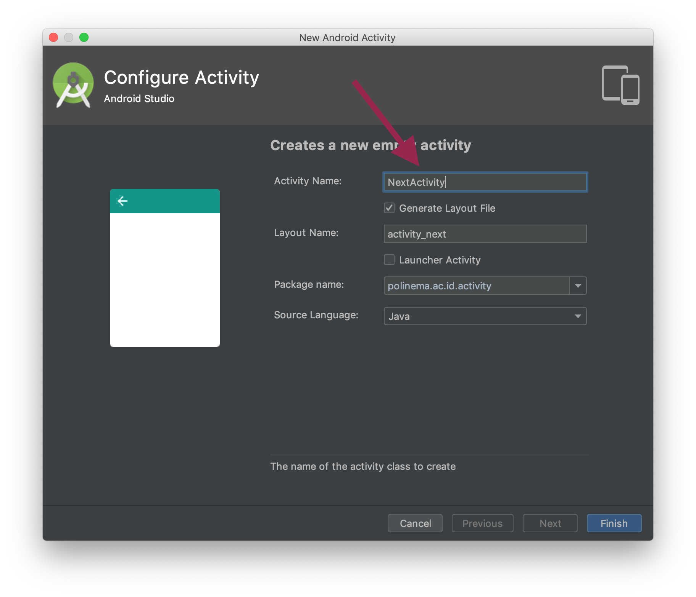
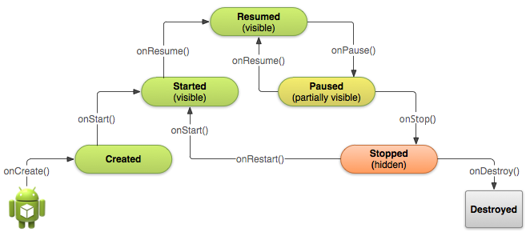
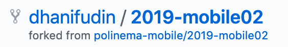

Activity
Pengertian Activity
Activity adalah:
- Komponen yang menampilkan dan mengatur halaman aplikasi sebagai tempat interaksi antara pengguna dengan aplikasi Android.
- Class MainActivity secara otomatis akan ter-generate ketika membuat suatu project. Class tersebut merupakan extends dari Class Activity.
Terdapat dua method yang pasti dimiliki oleh satu activity, yaitu:
onCreate(). Untuk menginisiasi/membuat suatu activity
onPause(). Untuk menyatakan ketika user meninggalkan suau activity.
Untuk menghubungkan Activity dengan tampilan yang telah dibentuk pada xml, digunakan fungsi setContentView().
- Untuk memanggil widget pada activity digunakan fungsi findViewById().
Cara Membuat Activity
Untuk membuat activity dapat dilakukan secara manual atau menggunakan template yang disediakan oleh android studio. Berikut ini langkah langkah untuk membuat sebuah activity.
- Klik kanan pada package yang ada pada new project kemudian pada menu yang ada
pilih menu
activitykemudian pada pilihan template pilihlahempty activity

- Kemudian pada dialog yang muncul isikan nama activity yang akan anda buat,
pada screenshot ini dibuat sebuah activity dengan nama
Next Activity

- Klik finish, ketika anda meng klik tombol finish Android Studio melakukan finalisasi pembuatan activity dengan melengkapi activity tersebut dengan sebuah file template xml dan mendaftarkannya ke Android Manifest.

- Hasil android manifest yang sudah berubah dapat dilihat pada gambar dibawah ini

- Jika anda ingin membuat sebuah activity tanpa mengikuti template yang
disediakan android studio dapat dilakukan dengan melakukan langkah langkah di
atas secara manual, mulai dari membuat sebuah class yang mengextend class
AppCompatActivitykemudian membuat sebuah layout xml dan memanggilnya pada fungsionCreate()di activity yang dibuat dan langkah terakhir adalah mendaftarkan activity tersebut ke Android Manifest.
Activity Life Cycle (Daur Hidup Activity)
- Activity aplikasi android dikelola dengan sistem “activity stack” (antrian bertumpuk).
- Ketika suatu activity dinyatakan “start” maka activity tersebut terletak di atas dari activity-activity yang telah berjalan pada “activity stack”. Keadaan tersebut bertahan hingga muncul suatu activity baru.
Empat keadaan yang dimiliki activity, yaitu:
Active/running: Jika activity tersebut berada pada posisi atas “stack activity”.
- Paused: Jika activity tersebut tidak dipakai atau akan dibutuhkan pada suatu saat tertentu namun, activity itu masih ada atau visible. Activity yang berada pada keadaan “pause” masih tersimpan pada memory. Namun jika memori telah penuh bias saja activity tersebut terhapus.
- Stopped: Jika activity sudah tidak dipakai dan digantikan oleh activity lain. Activity yang telah “stopped” tidak akan dipanggil lagi, dan memori akan menghapus segala informasi mengenai activity tersebut.
- Restart: Jika activity “paused” atau “stopped”, sistem dapat menghapus activity ini dari memory, dan ketika activity ini dibutuhkan dan dipanggil kembali maka, activity akan kembali ke keadaan awal (restart).

Praktikum
Bukalah tautan Starter Code berikut.
Perhatikan pada pojok kanan atas halaman GitHub, terdapat tombol
 . Lakukan proses fork repository dengan menekan
tombol Fork, tunggu hingga proses selesai.
. Lakukan proses fork repository dengan menekan
tombol Fork, tunggu hingga proses selesai.Catatan: Fork adalah proses untuk menyalin repository dari repository kepemilikan seseorang ke repository sendiri. Fork biasanya digunakan untuk berkontribusi ke repository orang lain atau menjadikannya sebagai starter code.
Jika proses fork telah selesai, maka anda akan mempunyai salinan repository pada akun GitHub anda.

- Lakukan proses clone dengan menyalin url repository fork. Pastikan url menggunakan username akun GitHub anda.

- Buka aplikasi terminal atau cmd, jalankan perintah clone dengan git. Contoh:
git clone https://github.com/<username>/2019-mobile02
Catatan: Ubah
<username>dengan akun GitHub anda.
Dalam starter code terdapat dua project Android, bukalah project AndroidLifecycle dengan menggunakan menu Open dari Android Studio. Tunggu hingga proses build selesai.
Pada project Android secara otomatis akan dibuatkan Activity utama dengan nama
MainActivityyang didefinisikan dalamMainActivity.javasertaactivity_main.xmluntuk pengaturan layoutnya. Selain itu, pada Activity dibuatkan juga default callbackonCreate().Untuk memahami lebih lanjut mengenai lifecycle pada Android, tambahkan dua callback
onStart()dan jugaonStop()dengan override. Sehingga hasil akhir menjadi seperti pada gambar berikut.

Tips: Untuk melakukan override anda dapat menggunakan shortcut
Ctrl + okemudian pilih nama method yang akan di-override. Atau anda dapat langsung mengetikkan nama method yang akan di-override kemudian dilanjutkan denganCtrl + spacedanEnter. Contoh:onSt Ctrl + spaceakan muncul suggestiononStart()Catatan:
Toastdigunakan untuk menampilkan pesan pop up pada Android.Toast.LENGTH_SHORTmengatur berapa lama pesan pop up akan ditampilkan. Secara umum struktur code Toast sebagai berikut.Toast.makeText(this, "This is a message", Toast.LENGTH_SHORT).show();
Jalankan kode tersebut.
Perhatikan tampilan pop up yang keluar ketika aplikasi dijalankan.
Lengkapi kode seperti gambar berikut kemudian jalankan kembali.
public class MainActivity extends AppCompatActivity {
@Override
protected void onCreate(Bundle savedInstanceState) {
super.onCreate(savedInstanceState);
setContentView(R.layout.activity_main);
}
@Override
protected void onStart() {
super.onStart();
Toast.makeText(this, "Application On Start", Toast.LENGTH_SHORT).show();
}
@Override
protected void onStop() {
super.onStop();
Toast.makeText(this, "Application On Stop", Toast.LENGTH_SHORT).show();
}
@Override
protected void onRestart() {
super.onRestart();
Toast.makeText(this, "Application On Restart", Toast.LENGTH_SHORT).show();
}
@Override
protected void onResume() {
super.onResume();
Toast.makeText(this, "Application On Resume", Toast.LENGTH_SHORT).show();
}
@Override
protected void onPause() {
super.onPause();
Toast.makeText(this, "Application On Pause", Toast.LENGTH_SHORT).show();
}
@Override
protected void onDestroy() {
super.onDestroy();
Toast.makeText(this, "Application On Destroy", Toast.LENGTH_SHORT).show();
}
}
- Tambahkan semua perubahan ke dalam repository dengan git. Kemudian commit dan push ke repository GitHub anda.